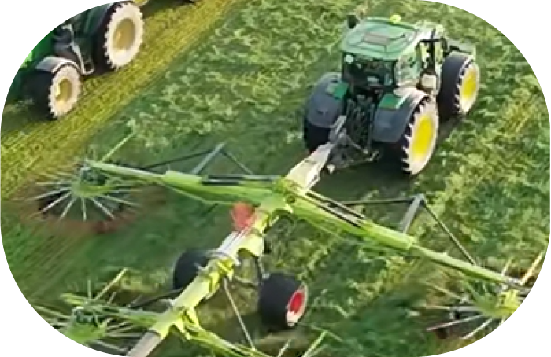


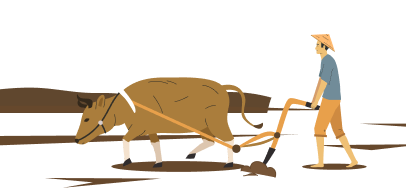
从一把锄头到一架无人机，从“靠天吃饭”到“精准播种”，中国农业，正在经历一场静悄悄却翻天覆地的革命。
那片熟悉的土地，不再只是祖辈耕耘的家园，更是年轻人返乡的沃土。他们种田，也种梦想；他们扎根土地，也链接世界。新时代的田野，正在长出新的中国模样。
一粒种子不再只是收成的起点，它承载着实验室里无数次失败与坚持，承载着科研者风雨无阻的脚步，也承载着亿万人饭碗的未来。
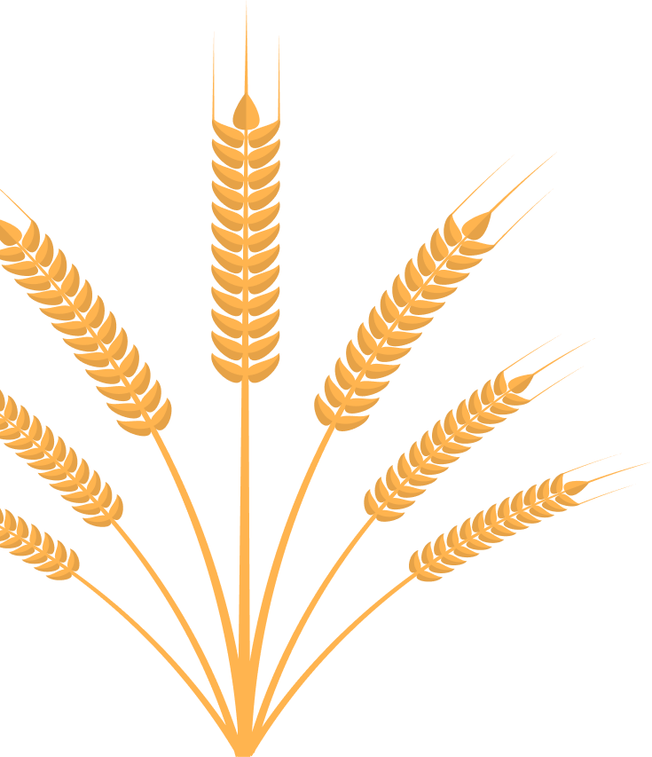
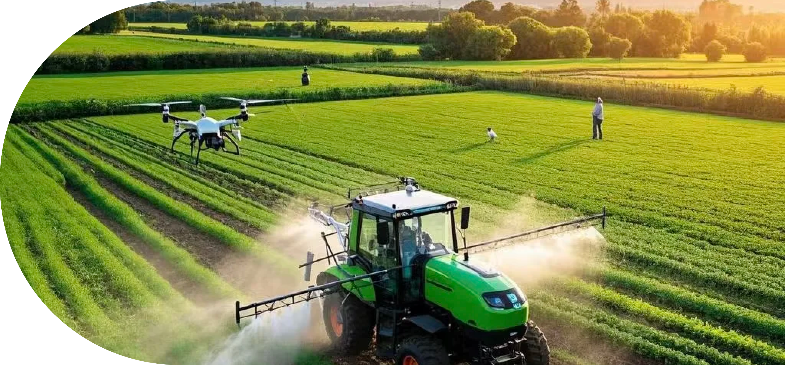


从一把锄头到一架无人机，从“靠天吃饭”到“精准播种”，中国农业，正在经历一场静悄悄却翻天覆地的革命。
那片熟悉的土地，不再只是祖辈耕耘的家园，更是年轻人返乡的沃土。他们种田，也种梦想；他们扎根土地，也链接世界。新时代的田野，正在长出新的中国模样。
一粒种子不再只是收成的起点，它承载着实验室里无数次失败与坚持，承载着科研者风雨无阻的脚步，也承载着亿万人饭碗的未来。
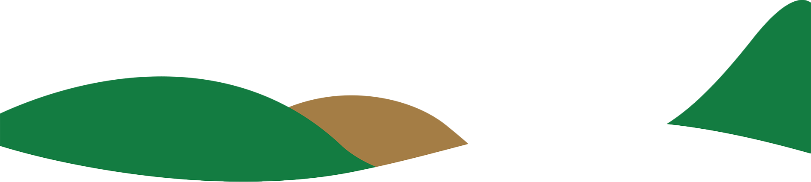
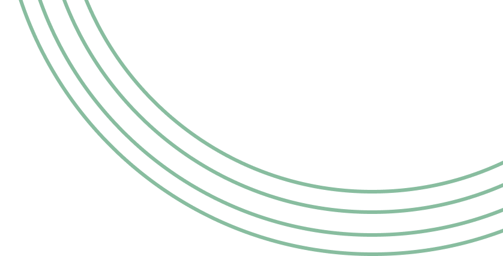
耕今与昔
Farming Today and the Past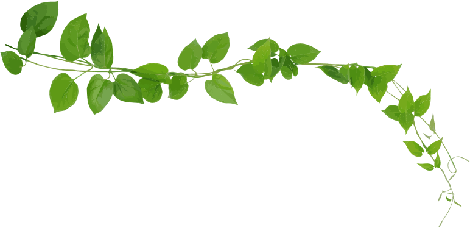
政策树
Policy Tree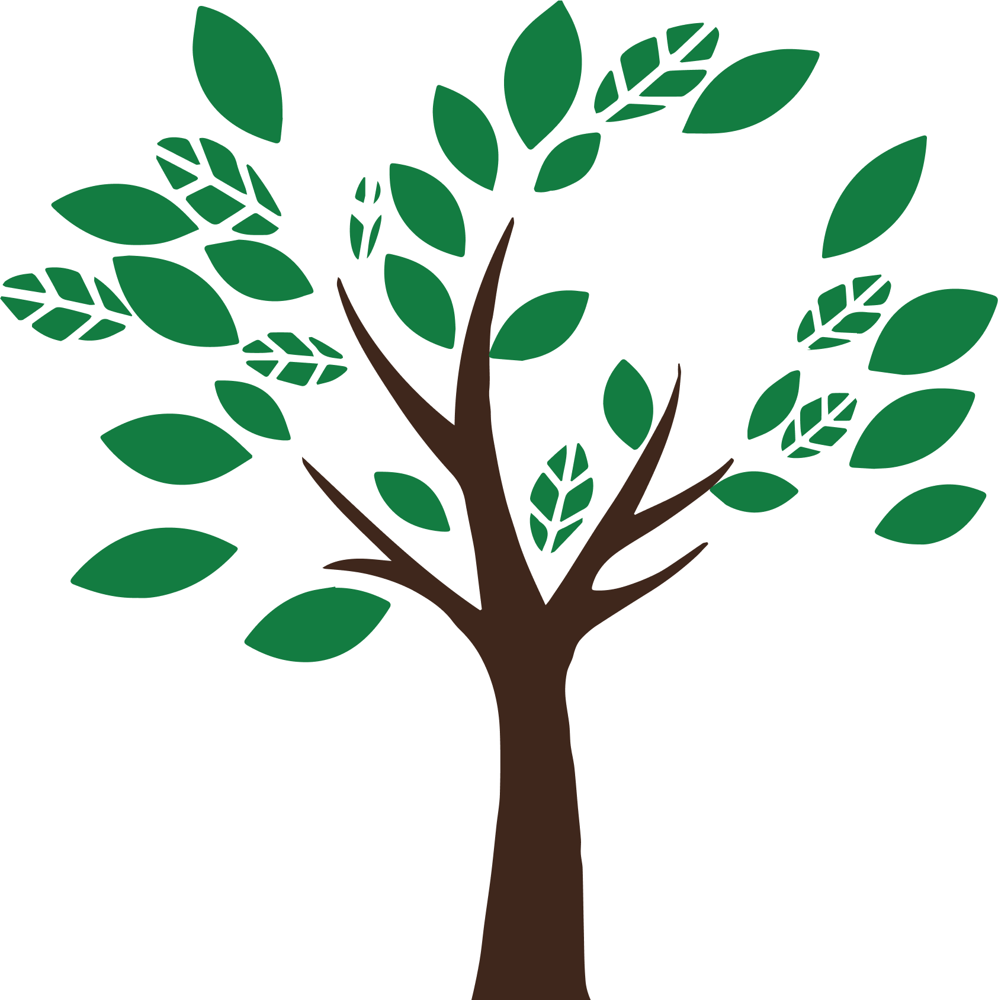
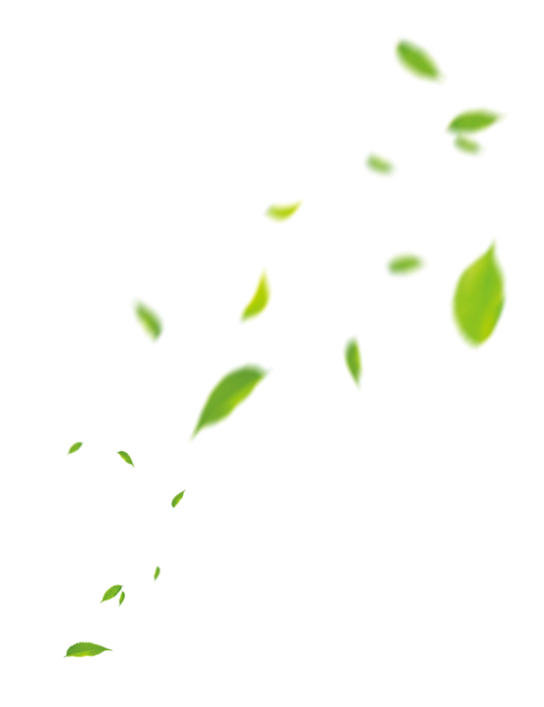
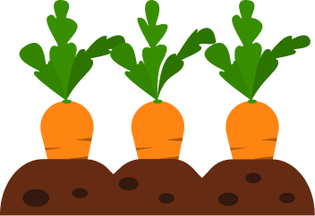
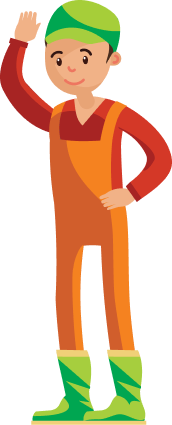
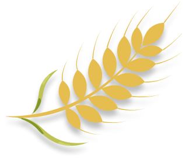
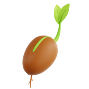
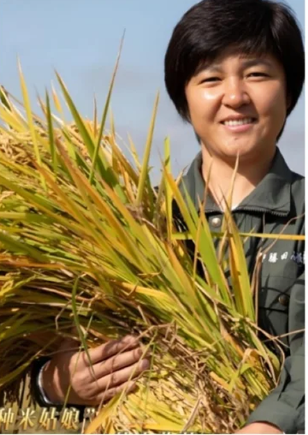
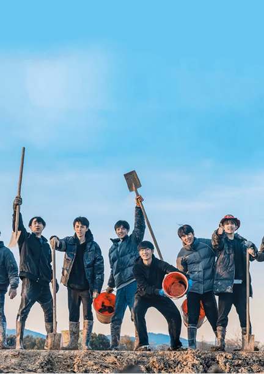
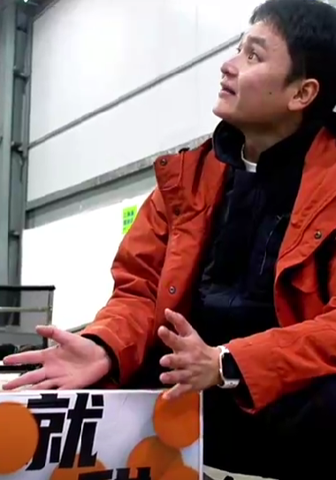
十位朝气蓬勃的年轻人走进乡村，用两年多的时间进行播种灌溉、施肥、收获、用汗水与努力见证一粒粒种子要成美田，一片农野的荒野变成田园。